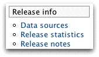

close

|
|
| next | |
| Report Pages | |
FlyMine is a data warehouse that integrates many diverse biological data sets. The main focus is Drosophila and Anopheles genomics and proteomics. By integrating such data into one place it is possible to construct queries across domains of biological knowledge.
See a list of all the data sources on the FlyMine home page: The FlyMine user interface is designed to go beyond simply looking up an identifier and viewing a report page. This quick tour will introduce some of the features:
Template queries are 'canned' queries that provide a simple form to perform a specific task.
Bags let you operate on whole lists of data at once. You can upload your own lists or save them from results tables.
Quick Search is available just like on other sites, type in an identifier to see a report page.
A QueryBuilder lets you create your own custom queries and edit existing templates.
Aspects are a way to explore the data and template queries for a particular area of biology - for example Comparive Genomics or Protein Interactions.
MyMine lets you create an account to save your own queries and bags.